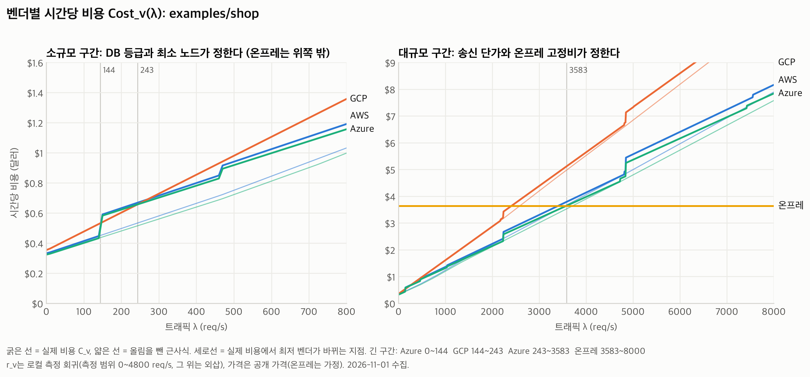
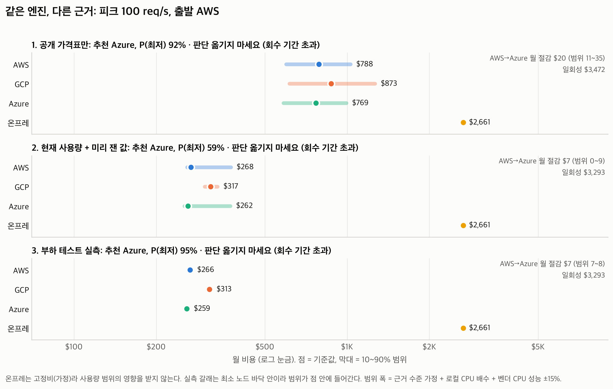
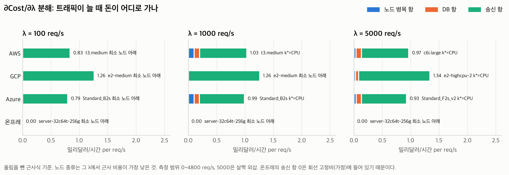
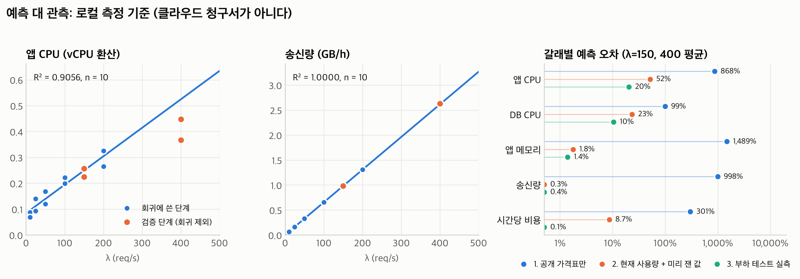
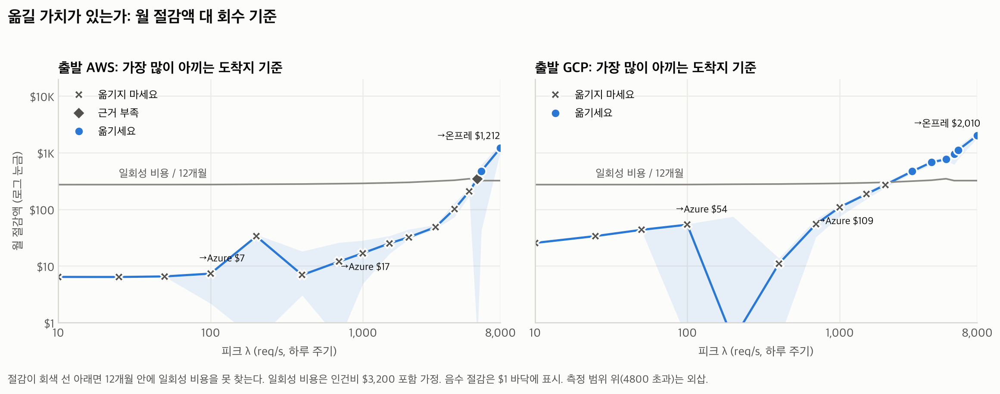

비용 알고리즘 POC 요약
대상 앱 examples/shop. 가격은 2026-11-01 수집한 공개 가격(온프레는 가정). 사용량은 로컬 도커 측정. 자세한 글은 Notion 카드의 완료 보고서.
이전 판단 사례
| 사례 | 판단 | 이유 | 도착 | 월 절감 | 일회성 | 회수 |
|---|---|---|---|---|---|---|
| A. AWS에서 소규모 (피크 100 req/s) | 옮기지 마세요 | 회수 기간 초과 | Azure | $7 | $3,293 | 448.6개월 |
| B. GCP에서 중간 규모 (피크 1000 req/s) | 옮기지 마세요 | 회수 기간 초과 | Azure | $109 | $3,455 | 31.7개월 |
| C. AWS에서 대규모 (피크 5000 req/s) | 옮기지 마세요 | 회수 기간 초과 | Azure | $208 | $4,167 | 20.0개월 |
| D. 온프레에서 소규모 (피크 100 req/s) | 옮기세요 | 회수 기간 안 | Azure | $2,403 | $3,291 | 1.4개월 |
| E. GCP에서 소규모 (피크 100 req/s) | 옮기지 마세요 | 회수 기간 초과 | Azure | $54 | $3,294 | 61.3개월 |
| F. AWS에서 중간 규모 (피크 1000 req/s) | 옮기지 마세요 | 회수 기간 초과 | Azure | $17 | $3,454 | 204.7개월 |
| G. GCP에서 대규모 (피크 5000 req/s) | 옮기세요 | 회수 기간 안 | Azure | $767 | $4,168 | 5.4개월 |
| H. AWS에서 초대규모 (피크 8000 req/s, 외삽) | 옮기세요 | 회수 기간 안 | 온프레 | $1,212 | $3,864 | 3.2개월 |
| I. GCP에서 피크 300 req/s, 가격표만 (실측 없음) | 옮기세요 | 회수 기간 안 | Azure | $542 | $3,811 | 7.0개월 |
| J. GCP에서 피크 300 req/s, 실측 | 옮기지 마세요 | 절감 없음 | Azure | $-9 | $3,347 | - |
| K. AWS에서 피크 500 req/s, 가격표만 (실측 없음) | 옮기지 마세요 | 회수 기간 초과 | Azure | $262 | $4,134 | 15.8개월 |
| L. AWS에서 피크 5650 req/s, 실측 (경계 부근) | 근거 부족 | 절감 범위가 0을 넘음 | 온프레 | $344 | $3,864 | 11.2개월 |
세 갈래 (피크 100 req/s, 출발 AWS)
| 갈래 | 벤더 | 월 비용 | 10~90% 범위 | 노드 | DB | P(최저) |
|---|---|---|---|---|---|---|
| 1. 공개 가격표만 (price-only) | AWS | $788 | $598 ~ $1,029 | c6i.large 2대 | db.m6i.large | 2% |
| 1. 공개 가격표만 (price-only) | GCP | $873 | $614 ~ $1,265 | e2-medium 2.5대 | cloudsql-custom-2-4 | 6% |
| 1. 공개 가격표만 (price-only) | Azure | $769 | $585 ~ $993 | Standard_F2s_v2 2대 | pg-flex-D2ds_v5 | 92% |
| 1. 공개 가격표만 (price-only) | 온프레 | $2,661 | $2,661 ~ $2,661 | server-32c64t-256g 2대 | 노드 안 | 0% |
| 2. 현재 사용량 + 미리 잰 값 (observed + sample) | AWS | $268 | $260 ~ $375 | t3.medium 2대 | db.t3.medium | 7% |
| 2. 현재 사용량 + 미리 잰 값 (observed + sample) | GCP | $317 | $301 ~ $336 | e2-medium 2대 | cloudsql-custom-2-4 | 34% |
| 2. 현재 사용량 + 미리 잰 값 (observed + sample) | Azure | $262 | $254 ~ $374 | Standard_B2s 2대 | pg-flex-B2s | 59% |
| 2. 현재 사용량 + 미리 잰 값 (observed + sample) | 온프레 | $2,661 | $2,661 ~ $2,661 | server-32c64t-256g 2대 | 노드 안 | 0% |
| 3. 부하 테스트 실측 (measured) | AWS | $266 | $263 ~ $269 | t3.medium 2대 | db.t3.medium | 0% |
| 3. 부하 테스트 실측 (measured) | GCP | $313 | $309 ~ $317 | e2-medium 2대 | cloudsql-custom-2-4 | 5% |
| 3. 부하 테스트 실측 (measured) | Azure | $259 | $256 ~ $262 | Standard_B2s 2대 | pg-flex-B2s | 95% |
| 3. 부하 테스트 실측 (measured) | 온프레 | $2,661 | $2,661 ~ $2,661 | server-32c64t-256g 2대 | 노드 안 | 0% |
민감도 (출발 AWS, 피크 1000 req/s)
| 조건 | AWS | GCP | Azure | 온프레 | 최저 | 판단 |
|---|---|---|---|---|---|---|
| 기준 (온디맨드, 디스크 50GB, LB 제외, 버스터블 포함) | $719 | $811 | $703 | $2,661 | Azure | 옮기지 마세요 |
| 1년 약정 단가 | $612 | $762 | $631 | $2,661 | AWS | 옮기지 마세요 |
| 로드 밸런서 포함 (ALB만 수집) | $736 | $811 | $703 | $2,661 | Azure | 옮기지 마세요 |
| NAT 경유 (비공개 서브넷 + cloudflared 터널) | $932 | $974 | $865 | $2,661 | Azure | 옮기지 마세요 |
| 노드 디스크 0GB (팀 계산과 같게) | $708 | $798 | $693 | $2,661 | Azure | 옮기지 마세요 |
| GKE 무료 크레딧 포함 | $719 | $738 | $703 | $2,661 | Azure | 옮기지 마세요 |
| 버스터블 제외 | $759 | $841 | $743 | $2,661 | Azure | 옮기지 마세요 |
| GCP 송신 Standard Tier | $719 | $583 | $703 | $2,661 | GCP | 옮기지 마세요 |
| Azure 송신 Internet 라우팅 | $719 | $811 | $675 | $2,661 | Azure | 옮기지 마세요 |
| AWS 성능 +15% | $716 | $811 | $703 | $2,661 | Azure | 옮기지 마세요 |
| GCP 성능 -15% | $719 | $811 | $703 | $2,661 | Azure | 옮기지 마세요 |
| 로컬→클라우드 CPU 배수 1.5 | $695 | $811 | $678 | $2,661 | Azure | 옮기지 마세요 |
| 로컬→클라우드 CPU 배수 4 | $759 | $811 | $743 | $2,661 | Azure | 옮기지 마세요 |
| 여유분 targetUtil 0.8 | $712 | $811 | $696 | $2,661 | Azure | 옮기지 마세요 |
| 온프레 운영 인력 0 (이미 있는 인력으로 봄) | $719 | $811 | $703 | $1,495 | Azure | 옮기지 마세요 |
| 온프레 서버 $22,000 | $719 | $811 | $703 | $2,894 | Azure | 옮기지 마세요 |
| 온프레 감가 36개월 | $719 | $811 | $703 | $2,994 | Azure | 옮기지 마세요 |
벤더별 시간당 비용 곡선

세 갈래 비교

비용 기울기 분해

예측 대 관측

회수 기간
